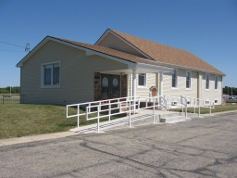

| Mission | Location |
Countryside Gospel Chapel
144 N State Rd Owosso, Michigan 48867
|
Sunday 9:15 am Fellowship Snack 10:00 am Family Bible Hour 11:15 am Worship & Communion Wednesday 7:00 pm Prayer/Bible Study |
 |
Contact Daniel Glardon 989 725-7756 Ray Fleming 989 743-3140 cgc@shianet.org |
Welcome to Countryside!
We are a nondenominational independent New Testament church. Our mission is to make disciples not only locally, but around the world through missionary support. We have practical biblical teaching and Sunday school classes for all ages, along with youth group and 'One Way Club' throughout the year. We welcome your presence on our website, and in our church!